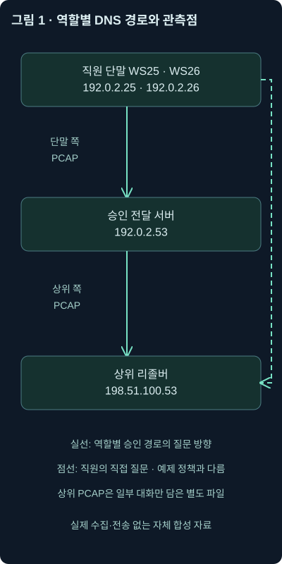
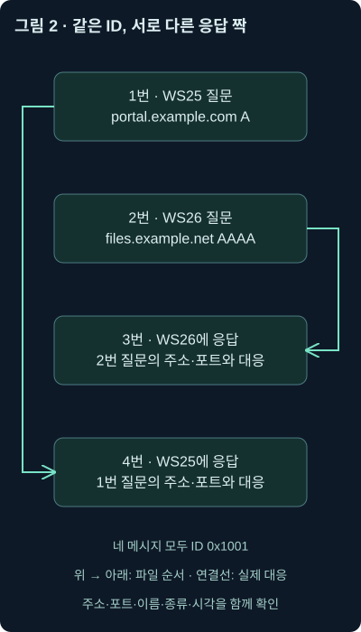
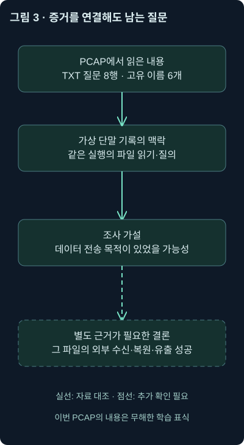
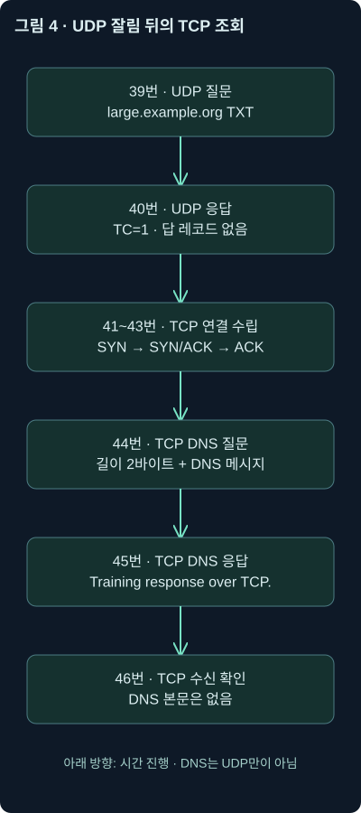

DNS 분석 실습 — 질문·응답에서 조사 기록까지
5강. 내려받는 자체 PCAP·CSV로 질문과 응답, 재시도·빈 답·TCP 전환을 읽고 근거 있는 조사 기록을 작성합니다.
1. 이번에는 설명을 패킷과 조사 기록으로 바꿔보겠습니다
3강에서는 이름을 묻고 답하는 원리를 배웠고, 4강에서는 그 기록에서 무엇을 의심할 수 있는지 살펴봤습니다. 이제 화면에 비슷한 행이 여러 개 나왔을 때, 어느 질문에 대한 답인지 연결하고 조사 문장을 써보겠습니다.
실습의 목표는 경보 이름을 맞히는 것이 아닙니다. 질문과 응답의 대응을 설명하고, 주소가 없다는 서로 다른 상황을 나누고, 정책과 다른 경로를 찾고, 반복 패턴을 계산한 뒤 어디까지 결론을 내릴 수 있는지 말하는 것입니다. 실제 업무에서도 이 순서가 바탕이 됩니다.
접근 가능한 교재의 다음 부분은 별도 워크북·가상 위키의 DNS 실습을 안내합니다. 교재 폴더와 현재 작업 폴더를 다시 확인했지만 해당 워크북과 원본 PCAP에는 접근하지 못했습니다. 따라서 이번 강의는 원래 실습의 재현이나 정답 풀이가 아닌, 앞의 개념에 연결한 독립적인 자체 실습입니다.
이번에는 내려받아 열 수 있는 파일도 함께 제공합니다. 모든 패킷은 문서용 IP와 예시 도메인으로 오프라인에서 만들었습니다. 실제 네트워크에서 수집하거나 전송하지 않았고 악성 코드는 포함하지 않았습니다. 파일을 해석해서 얻은 수치는 실제 수행 결과이지만, 사건과 단말 기록 자체는 교육용 가상 자료라는 점을 구분해 읽어주세요.
2. 실습 자료를 받고 먼저 역할을 나눕니다
압축을 풀면 두 개의 PCAP과 CSV, 검증 결과가 나옵니다. PCAP은 패킷과 관측 시각을 담는 파일 형식입니다. CSV는 한 행을 하나의 항목으로 저장하고 열을 구분하는 텍스트 표입니다. 이름이 비슷해도 원본 역할은 다릅니다.
| 파일 | 역할 | 해석할 때의 주의점 |
|---|---|---|
| dns-client.pcap | 단말 쪽을 가정한 패킷 46개 | 실제 수집본이 아니라 자체 합성 파일 |
| dns-upstream.pcap | 전달 서버 바깥쪽의 일부 대화를 가정한 4개 패킷 | 별도 관측점·선택한 사례이며 전체 상위 트래픽이 아님 |
| packets.csv | 첫 PCAP을 독립적으로 해석한 패킷별 표 | TShark 출력은 아니며 DNS가 없는 TCP 행도 포함 |
| transactions.csv | 질문 행과 응답 프레임을 연결한 표 | 응답 없는 반복 질문은 두 행 그대로 보존 |
| endpoint-events.csv | 프로그램·파일 접근을 가정한 보조 기록 | 실제 EDR 수집 결과가 아닌 가상 맥락 |
| asset-inventory.csv | 주소·장비·역할과 유효 기간 | 사건 시각에 맞춰 주소를 해석하기 위한 조건 |
| connection-events.csv | 후속 연결·허용 기록을 가정한 자료 | 패킷에서 직접 추출한 웹 성공 기록이 아님 |
| analysis-results.json | PCAP 해석에서 확인한 수치 | 어떤 단위로 계산했는지 본문과 함께 읽기 |
| SHA256SUMS.txt | 파일별 SHA-256 요약값 | 같은 파일을 사용했는지 확인하는 자료 |
모든 시각은 UTC입니다. 파일 범위는 2026년 11월 2일 00:00:00부터 00:02:30.170000까지입니다. 긴 공백과 적은 패킷 수는 학습용 구성입니다. 실제 회사의 정상 트래픽량이나 질의 빈도 기준으로 사용하지 않습니다.
PCAP만 먼저 받아도 됩니다. 단말 쪽 PCAP, 상위 구간 PCAP, 패킷 해석 CSV, 검증 요약을 개별로 열 수 있습니다. 이름을 실제로 조회하거나 패킷을 재전송할 필요는 없습니다. 저장된 파일을 읽는 실습입니다.
3. 파일이 맞는지 확인하고 도구의 표시 조건을 맞춥니다
택배 상자를 받은 뒤 송장 번호를 확인하듯, 분석할 파일이 같은지 먼저 확인하겠습니다. SHA-256은 파일 내용으로부터 일정 길이의 요약값을 계산하는 방식입니다. 한 글자만 달라져도 결과가 달라질 수 있어 파일 비교에 유용합니다. 다만 요약값이 같다는 사실이 사건의 진위나 파일의 안전성을 따로 보증하지는 않습니다.
PowerShell에서는 다음처럼 확인할 수 있습니다. 아래 명령은 실습 폴더에서 실행하는 예시입니다.
Get-FileHash .\dns-client.pcap -Algorithm SHA256Get-FileHash는 지정한 파일의 요약값을 계산합니다. -Algorithm SHA256은 사용할 계산 방식을 명시합니다. 이 파일에 대해 작성 과정에서 확인한 값은 다음과 같습니다. 대문자·소문자의 표기 차이는 같은 16진수 값을 뜻합니다. Microsoft Get-FileHash 문서
c7bf3e2ceef94a256e50f392c523571ce87d19b5aada1df0e9a2077416162193Wireshark가 있다면 File → Open으로 dns-client.pcap을 여세요. 실시간 캡처를 시작하지 않습니다. 이름 자동 해석은 끄고, 시간 표시는 UTC 날짜·시각이나 첫 패킷 이후의 상대 시간으로 맞추면 설명과 비교하기 편합니다. 상대 시간은 첫 패킷을 0초로 놓은 경과 시간입니다. 자동 이름 해석은 화면의 주소를 이름으로 바꾸거나 설정에 따라 추가 해석을 시도할 수 있으므로, 원래 주소를 직접 보는 조건을 유지합니다. Wireshark 시각 표시, 이름 해석 설정
이 환경에서는 Wireshark·TShark 실행 파일을 확인하지 못했습니다. 따라서 아래 필터의 화면 결과를 실행한 것처럼 제시하지 않습니다. 실제 파일 해석은 dpkt 1.9.8로 별도 수행했고, 제공 CSV와 수치는 그 결과입니다. Wireshark 표시 필터·TShark 명령은 공식 문서와 대조한 독자용 실습 절차입니다. 공식 자료 확인 날짜는 2026년 11월 2일입니다. dpkt 1.9.8 배포 정보
4. 같은 주소라도 장비 역할에 따라 정책이 달라집니다
이번 가상 회사의 직원 단말은 192.0.2.25인 WS25, 192.0.2.26인 WS26입니다. 승인된 DNS 전달 서버는 192.0.2.53입니다. 직원 단말은 이 서버만 사용한다는 조건입니다.
그런데 전달 서버 자체는 상위 리졸버 198.51.100.53에 질문해도 됩니다. 따라서 직원이 그 주소로 직접 묻는 것과 전달 서버가 묻는 것은 같은 정책 위반이 아닙니다. 물건을 전달하는 담당자와 일반 직원의 출입 권한이 다른 상황을 떠올리면 됩니다.

그림의 실선은 이 실습에서 승인한 질문 경로이고, 별도 가지는 직원 단말이 상위 주소에 직접 질문하는 경로입니다. 단말 쪽 PCAP과 상위 쪽 PCAP은 서로 다른 위치를 가정합니다. 두 파일의 같은 프레임 번호는 같은 패킷을 뜻하지 않습니다. 프레임 번호는 각 파일 안에서의 순서입니다.
이번 파일은 IPv4로 패킷을 운반합니다. 뒤에 IPv6 주소가 담긴 AAAA 응답이 나오지만, 그것이 IPv6 패킷을 수집했다는 뜻은 아닙니다. 운반하는 통신의 IP 버전과 답 안에 들어 있는 주소 종류를 구분하세요.
5. 처음 네 프레임에서 질문과 응답을 연결해보세요
먼저 다음 표시 필터를 넣어 첫 네 행만 봅니다.
frame.number in {1, 2, 3, 4}frame.number는 파일 안의 패킷 번호이고, in {...}은 괄호 안의 값 중 하나인지 검사합니다. 앞에서 설명한 대로 다른 파일에 옮겨 붙이면 다른 대상을 고르게 됩니다. 이번 실습 파일을 열었는지 먼저 확인하세요.
첫 두 질문의 DNS 거래 ID는 모두 0x1001입니다. 0x는 뒤의 수가 16진수라는 표기입니다. 하지만 서로 다른 단말과 포트에서 나왔고, 질문 이름과 종류도 다릅니다. ID만 보지 말고 답을 골라보겠습니다.
| 프레임 | 방향과 포트 | 이름·종류 | 실제 대응 |
|---|---|---|---|
| 1 | 192.0.2.25:53001 → 192.0.2.53:53 | portal.example.com A | 질문이며 답은 4번 |
| 2 | 192.0.2.26:53002 → 192.0.2.53:53 | files.example.net AAAA | 질문이며 답은 3번 |
| 3 | 192.0.2.53:53 → 192.0.2.26:53002 | files.example.net AAAA | 2번의 주소·포트를 뒤집은 응답 |
| 4 | 192.0.2.53:53 → 192.0.2.25:53001 | portal.example.com A | 1번의 주소·포트를 뒤집은 응답 |
위 표는 생성한 PCAP을 해석해 확인한 결과입니다. 응답이 질문 순서대로 오지 않았습니다. “질문 다음 행이 답”이라는 방식이 틀릴 수 있는 이유입니다. 전송 프로토콜, 양쪽 주소와 포트, 거래 ID, 질문 이름·종류, 시각을 결합하면 대응이 분명해집니다.

그림의 연결선은 실제 대응이고 위에서 아래로 파일 순서를 읽습니다. 선이 가리키는 짝을 먼저 확인한 다음 ID가 같다는 사실을 보세요. 도구가 제공하는 요청·응답 연결 기능은 편리하지만, 수집이 중간부터 시작하거나 재전송·충돌이 있으면 원본 필드로 다시 확인할 수 있어야 합니다.
6. 별칭과 여러 주소를 한 줄의 방문 기록으로 바꾸지 않습니다
4번 응답에는 CNAME과 A 두 개가 들어 있습니다. CNAME은 다른 이름을 가리키는 별칭 레코드입니다. 답을 풀어 적으면 다음과 같습니다.
portal.example.com CNAME edge.example.com
edge.example.com A 203.0.113.80
edge.example.com A 203.0.113.81관측 사실은 portal.example.com의 주소를 물었고 위 세 레코드를 받았다는 것입니다. 두 주소 모두에 실제로 접속했다거나, 웹 페이지가 열렸다는 뜻은 아닙니다. 별칭 자체도 브라우저 주소창을 다른 사이트로 이동시키는 명령이 아닙니다.
보조 자료 connection-events.csv에는 직후 WS25가 203.0.113.80:443으로 연결을 허용받았다는 가상 기록이 있습니다. 같은 시각·단말·응답 주소와 연결되므로 후속 통신 후보를 지지합니다. 하지만 그 CSV는 가상의 보조 기록이고 PCAP에는 해당 웹 대화가 없습니다. 페이지 내용·로그인·파일 다운로드까지 확인한 것으로 쓰지는 않습니다.
3번 응답의 2001:db8::20은 IPv6 주소입니다. 질문·응답의 운반은 IPv4이므로 ipv6 패킷 필터에는 보이지 않을 수 있습니다. 답에 들어 있는 주소를 찾으려면 AAAA 필드, 실제 IPv6 통신을 찾으려면 IPv6 패킷을 보아야 합니다.
7. 역방향 질문의 주소를 직접 복원해보겠습니다
5번 질문은 80.113.0.203.in-addr.arpa의 PTR입니다. 3강에서 IPv4 역방향 이름은 주소 바이트 순서를 거꾸로 쓴다고 배웠지요. 접미사를 빼고 80, 113, 0, 203을 뒤집으면 203.0.113.80입니다.
6번 응답의 PTR 값은 edge.example.com입니다. 이 결과는 역방향 영역에 그 이름이 설정됐다는 뜻입니다. 4번의 A 응답과 어느 정도 일관성은 있지만, 같은 운영자·정상 콘텐츠·정당한 사용자라는 결론을 주지는 않습니다. 공유 주소나 서로 다른 관리 주체도 생각해야 합니다.
dns.qry.type == 1212는 PTR 종류 번호입니다. 응답에도 질문 부분이 포함될 수 있으므로 이 조건은 질문과 응답을 함께 고를 수 있습니다. 질문만 필요하면 dns.flags.response == 0 and dns.qry.type == 12처럼 방향 조건을 붙입니다. 같은 필드가 응답에도 있다는 점은 다른 종류를 찾을 때도 중요합니다.
8. 답이 없다는 세 상황을 구분합니다
이번에는 7~10번과 15~16번을 보겠습니다. 이름에 대응하는 주소가 안 보인다는 점은 비슷하지만, 증거의 의미는 다릅니다.
| 구간 | 파일에서 확인한 내용 | 해석 |
|---|---|---|
| 7 → 8 | AAAA 질문에 NOERROR, 답 레코드 0개, 권한 부분에 SOA | 이름의 해당 종류 데이터가 없음을 알리는 NODATA 사례 |
| 9 → 10 | A 질문에 NXDOMAIN, 답 레코드 0개, SOA | 이름이 없다는 명시적인 DNS 응답 |
| 15·16 | 같은 이름·ID·포트의 질문 두 행, 대응 응답 미관측 | 재시도 형태이며 응답 결과 자체는 확인할 수 없음 |
NODATA는 별도 숫자 응답 코드 이름이 아닙니다. NOERROR 응답 안에서 원하는 종류의 데이터가 없음을 해석하는 경우입니다. SOA는 존의 기본 관리 정보를 담는 레코드로, 여기서는 부정 응답을 해석하는 맥락을 제공합니다. 빈 답이 언제나 NODATA라는 뜻은 아니므로 종류·코드·권한 부분을 함께 봅니다. 뒤에 나올 잘린 응답도 답이 비어 있습니다. 부정 응답과 캐시 RFC 2308
dns.flags.response == 1 and dns.flags.rcode == 3앞 조건은 응답, 뒤의 3은 NXDOMAIN 코드입니다. 이 파일에서 해당 조건의 내용을 가진 프레임은 10번입니다. 이 확인은 독립 해석 결과이며 Wireshark 필터를 여기서 실행한 화면 결과는 아닙니다.
15·16번의 응답이 없는 이유를 NXDOMAIN으로 채우면 안 됩니다. 서버 무응답, 경로 차단, 수집 누락, 다른 구간에서의 응답, 파일 범위 밖의 응답을 추가 확인해야 합니다. 설계상 이 파일에는 응답을 넣지 않았지만, 실제 조사자는 파일이 보여주는 범위까지만 판단합니다.
9. 재전송을 세는 방식이 통계를 바꿉니다
15번과 16번은 같은 단말·포트·이름·종류·거래 ID를 사용하고 1초 간격으로 나타납니다. 이 실습에서는 같은 요청을 다시 시도하는 모양을 의도해 넣었습니다. 패킷 행은 두 개지만, 사용자가 서로 다른 두 이름을 요청한 사건은 아닙니다.
그래서 질문 패킷 수와 논리적인 요청 수를 구분해야 합니다. transactions.csv는 원본 질문 행을 보존하기 위해 두 행을 남겼고 응답 번호를 비워뒀습니다. 이를 보고 “독립된 DNS 거래가 두 개 실패했다”라고 자동 해석하지 마세요. 재시도 통합 기준을 세우기 전에는 응답 미관측 질문 행 두 개라고 적는 편이 정확합니다.
전체 단말 파일에서 확인한 DNS 질문 행은 22개, 응답 행은 20개입니다. 이 수치는 재시도를 제거한 고유 요청 수가 아닙니다. 응답 중 NXDOMAIN은 한 개이므로 “관측된 DNS 응답 기준 NXDOMAIN 비율”은 다음과 같습니다.
1 / 20 = 0.05 = 5%분모 20은 관측된 응답 수입니다. 미관측 질문 두 개를 NXDOMAIN으로 바꾸어 분자에 더하면 다른 측정이 됩니다. 이 작은 자료의 5%를 회사 전체의 정상·비정상 기준으로 삼지도 않습니다.
10. TTL이 줄었다면 캐시 응답을 증명한 것일까요?
11번 질문과 12번 응답은 약 120초 뒤 다시 portal.example.com을 확인합니다. 답의 구조와 주소는 같고, 처음 300초였던 TTL은 180초로 줄어 있습니다. TTL은 응답 데이터를 기본적으로 얼마 동안 캐시할 수 있는지 나타내는 초 단위 값입니다.
캐시를 사용했다는 설명과 잘 맞습니다. 다만 TTL 감소만으로 특정 장비의 내부 캐시에서 답을 만들었다는 사실까지 증명하지는 않습니다. 다른 상위 장비의 캐시에서 받은 답일 수도 있습니다. 생성자는 의도한 조건을 알지만, 분석자는 패킷에서 보이는 사실과 그에 맞는 가설을 구분합니다.
첫 응답과 두 번째 응답의 정확한 시각 차이는 약 119.97초입니다. TTL은 정수 초로 표현되므로 교육용으로 “약 120초 경과, 약 180초 남음”이라고 읽습니다. 정밀한 캐시 내부 동작 실험을 재현한 자료는 아닙니다. 상위 파일에는 두 번째 조회를 의도적으로 넣지 않았지만 그 파일은 일부 대화만 뽑은 사례이므로, 그것만으로 캐시 적중을 별도 확정할 수도 없습니다.
11. 정상 이름을 물었지만 경로는 정책과 다른 프레임을 찾습니다
13번 질문의 이름은 portal.example.com입니다. 앞에서 봤던 정상적인 예제 이름이지요. 하지만 목적지는 승인 전달 서버가 아니라 198.51.100.53입니다. 이번 가상 정책에서 직원 단말이 직접 사용하면 안 되는 주소입니다.
dns.flags.response == 0 and ip.src == 192.0.2.0/24 and not (ip.dst == 192.0.2.53)첫 조건은 DNS 질문, 두 번째는 예제 직원 주소 대역, 마지막은 승인 목적지를 제외합니다. and는 모두 만족, not은 제외를 뜻합니다. 단말 쪽 PCAP에서 이에 해당하는 질문은 13번이고 14번에는 응답도 있습니다. 즉 질문 시도뿐 아니라 이 합성 파일에서는 응답까지 관측됩니다.
그런데 같은 필터를 상위 파일에 무심코 적용하면 전달 서버의 정상 상위 질문도 걸릴 수 있습니다. 192.0.2.53 역시 /24 대역 안에 있기 때문입니다. 실무 규칙에서는 직원 자산 집합과 리졸버 자산을 구분해야 합니다. 파일·관측점·자산 역할을 빼고 필터만 재사용하면 오탐이 생깁니다.
보조 단말 기록은 diagnostic-helper.exe의 질의와 승인 여부 미확인을 제시합니다. 이것은 “비인가 경로를 사용하는 프로그램을 더 확인해야 한다”는 근거입니다. 도구 이름이 진단 도구처럼 보인다고 정상이라고 확정하지 않고, 정책과 달랐다고 감염으로 확정하지도 않습니다. 설치·서명·설정·승인 이력을 이어서 봅니다.
12. 긴 TXT 이름 두 묶음에서 숫자를 먼저 계산합니다
17~32번은 WS25가 collect.example.net 아래에 보낸 TXT 질문·응답입니다. 예제 이름에는 16진수처럼 보이는 고정 레이블과 part01 같은 번호가 들어 있습니다. TXT 답은 LAB-ACK-01 같은 무해한 학습 표식입니다. 파일에 실제 문서나 명령을 실은 것은 아닙니다.
질문 프레임은 17·19·21·23·25·27·29·31번입니다. part01부터 part06까지 나온 뒤 part01, part02가 반복됩니다. 따라서 질문은 8행, 서로 다른 전체 이름은 6개입니다.
고유 이름 비율 = 6 / 8 = 0.75 = 75%두 응답 방향까지 섞어 16행을 분모로 쓰면 질문의 고유 이름 비율이 아닙니다. 또 이름 전체가 아니라 collect.example.net만 세면 고유 값은 하나가 됩니다. 어떤 단위로 묶고 무엇의 고유 수를 세는지 먼저 정해야 하는 이유입니다.
33~36번은 WS26의 긴 TXT 질문 두 건입니다. 이름 모양만 보면 앞 묶음과 비슷합니다. 가상 보조 기록에는 승인된 보안 에이전트의 동작이라는 맥락이 있습니다. 프로그램 이름만 믿는 것이 아니라 자산·설치 승인·실행 식별자를 확인하는 연습입니다. 정상 문맥이 있는 비교군도 같은 화면에서 볼 수 있어야 “긴 TXT = 악성”이라는 단순 규칙을 피할 수 있습니다.
13. CSV에서 같은 비율을 직접 계산해보세요
Wireshark가 없어도 제공한 packets.csv로 묶음 계산을 해볼 수 있습니다. 먼저 CSV는 패킷을 별도로 해석해 얻은 표이며, 단말 원본 로그가 아니라는 점을 기억하세요. 아래 PowerShell 예제는 실제로 실행해 결과를 확인했습니다.
$q = Import-Csv .\packets.csv | Where-Object { $_.is_response -eq '0' -and $_.qname.EndsWith('.collect.example.net') }
$total = @($q).Count
$unique = @($q.qname | Sort-Object -Unique).Count
if ($total -gt 0) { $unique / $total }Import-Csv는 열 이름을 가진 항목으로 파일을 읽습니다. Where-Object는 조건을 만족하는 행을 남기고, $_는 지금 검사 중인 행입니다. CSV의 is_response 값 0은 질문입니다. EndsWith는 이름이 점을 포함한 해당 접미사로 끝나는지 검사합니다. 이번 고정 자료는 이름이 소문자이고 집계 대상이 지정돼 있으므로 이렇게 단순화했습니다. 범용 도메인 정규화·PSL 분석기를 대신하지는 않습니다.
@(...)는 결과가 한 개이거나 여러 개여도 항목 수를 일관되게 세기 위한 표기입니다. Sort-Object -Unique는 중복 이름을 제거합니다. 마지막 조건은 질문이 0개일 때 0으로 나누는 계산을 피합니다. 결과가 없으면 안전 비율 0%라고 만들어 넣는 대신 데이터와 조건을 다시 확인해야 합니다.
이 파일에서 실행한 값은 $total = 8, $unique = 6, 나눈 결과 0.75입니다. PowerShell의 지역 설정에 따라 소수 표시 문자는 달라질 수 있지만 값은 같습니다. Microsoft Import-Csv 문서
14. 패킷과 가상 단말 기록을 연결하되 유출 성공은 따로 판단합니다
endpoint-events.csv에서는 WS25의 PROC-HELPER-25가 시작되고 training-notes.txt를 읽은 뒤 해당 TXT 이름 공간을 사용한 것으로 설정했습니다. process_guid는 이 가상 자료에서 같은 실행을 구분하는 식별자입니다. 실제 제품의 원본 필드 형식을 그대로 재현한 것은 아닙니다.
파일 접근과 DNS 통신이 이어진다는 맥락은 조사 우선순위를 높입니다. 그렇다고 그 파일이 DNS에 들어갔다고 확정할 수는 없습니다. 이 PCAP의 TXT 내용은 학습 표식이고, 이름의 고정 레이블도 사람이 넣은 가상 값입니다. 실제 업무에서는 실행 식별자·시각·읽은 범위·통신 내용·상대 수신 근거를 연결해야 합니다.

그림의 위쪽 두 자료는 서로 다른 출처입니다. 가운데 연결은 시각과 장비·실행 맥락을 맞추는 단계이며, 맨 아래의 유출 성공은 아직 별도 확인이 필요한 결론입니다. “파일을 읽었다”와 “그 파일을 외부에서 복원했다” 사이를 선 하나로 뛰어넘지 않는 연습을 해보세요.
가상 보안 에이전트의 기록도 마찬가지입니다. 승인 맥락이 있다는 것은 정상 설명을 지지하지만, 실제 사건에서는 경로·서명·배포 이력과 일치하는지 확인합니다. 파일명만 같은 위장 프로그램이나 정상 프로그램을 악용한 경우도 있기 때문입니다.
15. 국제화 레이블을 이름의 중간에서 찾아봅니다
37번 질문은 www.xn--exmple-4nf.example입니다. 전체 이름은 www로 시작하지만 두 번째 레이블이 xn--로 시작합니다. 국제화 도메인을 찾을 때 각 레이블을 봐야 하는 이유를 다시 확인할 수 있습니다.
dns.flags.response == 0 and dns.qry.name matches r"(^|\.)xn--"matches는 정규 표현식 검사입니다. ^는 이름 시작, |는 또는, \.은 실제 점입니다. 그래서 이름 시작이나 점 바로 뒤에 xn--가 있는지 찾습니다. 응답에도 질문 이름이 반복될 수 있어 질문 방향 조건을 붙였습니다. Wireshark 표시 필터 문법
앞 강의에서 이 레이블은 exаmple의 ASCII 표현임을 확인했습니다. 가운데 а는 키릴 문자입니다. 하지만 이번 실습은 실제 피싱 사이트를 등록하거나 접속한 자료가 아닙니다. .example 아래의 자체 이름이며, IDN 후보를 찾았다는 사실과 악성 행위를 판단하는 일을 분리합니다.
16. 답이 잘려서 TCP로 이어지는 흐름을 확인합니다
39번은 large.example.org의 TXT 질문이고 40번은 답 부분이 비어 있는 응답입니다. 앞의 NODATA와 같을까요? 여기서는 TC 비트가 1입니다. TC는 Truncated, 즉 잘렸다는 표시입니다. 이 연습에서는 UDP 응답이 잘렸다고 알려 TCP로 다시 질문하는 흐름을 넣었습니다.
dns.flags.truncated == 1 or tcp.port == 53앞 조건은 잘렸다는 표시가 있는 DNS, 뒤 조건은 출발지 또는 목적지가 TCP 53인 통신을 찾습니다. or이므로 둘 중 하나만 맞아도 포함됩니다. TCP 연결을 여는 제어 패킷에는 아직 DNS 질문이 없을 수 있어 DNS 필터만 고집하면 중간 과정을 놓칩니다.

실제 파일에서는 41~43번이 TCP 연결 수립, 44번이 DNS 질문, 45번이 TXT 응답, 46번이 수신 확인입니다. TCP는 순서와 전달을 관리하는 전송 프로토콜이고, 연결 수립의 SYN·SYN/ACK·ACK는 통신을 시작하기 위한 제어 표시입니다. 45번의 답은 Training response over TCP.라는 학습 문자열입니다.
TCP 안의 DNS 메시지 앞에는 메시지 길이 2바이트가 붙습니다. 바이트는 여기서 8비트 한 단위입니다. 실제 대화는 여러 TCP 조각으로 나뉠 수 있지만, 이 작은 파일은 질문과 응답을 각각 한 데이터 구간에 담았습니다. 따라서 이번 독립 해석기가 이 파일을 읽었다는 결과를 범용 TCP 재조립 검증으로 넓히지는 않습니다. DNS 전송 형식 RFC 1035
UDP의 ID 0x1400과 TCP의 ID 0x1401도 다릅니다. 두 메시지가 직접적인 같은 ID 쌍은 아닙니다. 같은 단말·리졸버·이름·종류와 이어지는 시각을 보고 “TCP로 다시 조회한 흐름”이라는 맥락으로 연결합니다. TCP 53이 있다는 이유만으로 비정상 대용량 전송이나 공격이라고 판단하지 않습니다.
17. 상위 구간에서는 최초 단말이 바로 보이지 않습니다
이제 dns-upstream.pcap을 따로 열어보세요. 이 파일의 질문 출발지는 모두 192.0.2.53입니다. 질문 종류와 이름은 단말 쪽 사례와 연결되지만, 패킷 자체에는 직원 단말의 출발지 주소가 남아 있지 않습니다.
portal.example.com의 상위 질문 ID는 0x9001입니다. 단말 파일의 0x1001과 다릅니다. 전달 서버가 자신의 통신을 만든 결과라는 설명과 맞습니다. 두 파일 사이에서는 ID만으로 짝을 찾을 수 없습니다. 이름·종류·시각과 전달 서버 로그를 함께 봐야 합니다.
중요한 조건이 하나 더 있습니다. 이 상위 파일은 전체 연속 수집을 흉내 낸 것이 아니라 두 대화만 넣은 선택 사례입니다. 여기에서 어떤 질문이 안 보인다고 캐시로 처리됐다고 증명할 수는 없습니다. 실제 수집에서도 센서 위치·필터·손실·관측 시간 범위를 확인한 뒤 부재를 해석합니다.
또 이 파일에서 198.51.100.53 사용은 전달 서버에 허용된 경로입니다. 단말 파일의 13번과 목적지가 같더라도 판단이 달라지는 이유를 자신의 말로 설명해보세요. 정책은 주소 한 개가 아니라 자산 역할과 통신 방향에 붙습니다.
18. TShark로 내보낼 때 여러 답을 빠뜨리지 않습니다
TShark가 설치된 환경이라면 다음처럼 로컬 PCAP에서 필요한 필드를 내보낼 수 있습니다. 이 명령은 여기서 실행하지 않은 독자용 예시입니다. 제공한 packets.csv를 이 명령의 출력이라고 혼동하지 마세요.
tshark -n -r dns-client.pcap -Y dns -T fields -E header=y -E "separator=," -E quote=d -E occurrence=a -E "aggregator=;" -e frame.number -e ip.src -e ip.dst -e dns.id -e dns.qry.name -e dns.flags.response -e dns.flags.rcode -e dns.a -e dns.aaaa -e dns.cname-n은 자동 이름 해석을 끄고, -r은 읽을 파일, -Y dns는 해석된 DNS만 고르는 표시 필터입니다. 실시간 인터페이스 수집 옵션을 사용하지 않습니다. -T fields는 필드형 출력, 각 -e는 원하는 열입니다. -E header=y는 열 이름을 붙이고 구분자와 큰따옴표 설정은 CSV로 읽기 쉽게 만듭니다.
occurrence=a는 여러 번 나오는 필드를 모두 남기고 aggregator=;는 같은 필드의 여러 값을 세미콜론으로 묶습니다. 첫 번째 값만 남기면 4번 응답의 두 A 주소 중 하나를 잃을 수 있습니다. 필드별 평탄화는 레코드 소유자·종류·TTL의 관계를 완벽하게 보존하지 않을 수도 있으므로 복잡한 답은 패킷 트리를 함께 확인합니다. TShark 공식 출력 옵션
사용 필드는 Wireshark 4.x 공식 참조에서 확인했습니다. 자동 응답 연결인 dns.response_in, dns.response_to도 도움이 되지만, 버전·재전송·수집 범위에 따라 연결 결과를 확인해야 합니다. 예를 들어 dns.response_missing은 4.4.0부터 문서화돼 있어 구버전에 무조건 있다고 가정하지 않습니다. DNS 필드와 버전별 지원
19. 결과가 안 나왔을 때는 무엇부터 확인할까요?
필터 결과가 0행이면 먼저 파일 이름과 관측점을 확인합니다. 상위 파일에 단말 주소를 넣으면 없는 것이 자연스럽습니다. 질문만 골랐는데 응답 필드를 찾거나, A만 고르고 AAAA 답을 찾는 조건도 맞지 않습니다. 조건 하나씩 줄여 어떤 조건에서 사라지는지 확인하세요.
이번 자료에서 ipv6 결과가 없더라도 AAAA 답은 있습니다. TCP 연결 수립 행에 DNS 필드가 없는 것도 정상입니다. 응답 없는 두 질문은 NXDOMAIN이 아닙니다. 이렇게 “없는 것”마다 이유가 다를 수 있다는 점을 기억하면 됩니다.
실제 사건에서는 암호화 DNS, 비표준 포트, 도구 해석 설정, TCP 재조립, 방향 누락, 캡처 손실, 파일 앞뒤 범위도 확인합니다. 이 실습에는 DoH·DoT·DoQ, IPv6 운반 패킷, 공격 실행, 실제 파일 유출이 없습니다. 따라서 이 실습의 0행 결과를 그런 기술의 탐지 성능 검증으로 확대할 수 없습니다.
20. 짧아도 근거가 이어지는 조사 기록을 작성합니다
이제 한 문단의 기록을 만들어보겠습니다. “DNS 이상 발견, 악성 감염”으로 끝내지 말고 어느 파일에서 무엇을 봤는지와 아직 모르는 점을 연결해보세요.
“단말 쪽 자체 실습 파일에서 WS25의 외부 리졸버 질의 13번과 응답 14번을 확인했다. 해당 경로는 제시된 직원 정책과 다르며, 가상 단말 기록의 진단 프로그램과 승인 이력을 추가 대조할 대상이다. 별도로 collect.example.net 아래 TXT 질문은 8행·6개 고유 이름으로, 가상 파일 접근 기록과 함께 조사 우선순위를 높일 수 있다. 패킷은 학습 표식만 포함하고 실제 악성 실행·유출 성공은 확인하지 않았다.”
이 문장은 두 문제를 섞지 않습니다. 외부 리졸버 사용과 승인 리졸버를 통하는 TXT 패턴은 서로 다른 흐름입니다. 한 경보를 찾았다고 다른 통신까지 같은 악성 프로그램의 행위로 연결하지 않는 연습입니다.
추가로 필요한 자료도 구체적으로 적습니다. 진단 프로그램의 배포·승인 이력, 실행 파일의 서명·경로, 같은 실행의 DNS 이벤트, 리졸버의 원본 요청·응답, 방화벽의 허용·차단 위치, 실제 콘텐츠나 수신 근거가 다음 확인 대상입니다. 어떤 기록을 받으면 어떤 가설을 확인할 수 있는지 설명할 수 있으면 좋은 조사 메모가 됩니다.
21. 복습 질문과 바로 읽는 해설
질문 1. 1번과 2번의 거래 ID가 같습니다. 왜 1번의 답을 3번으로 고르면 안 될까요?
해설: 3번은 WS26의 주소·포트로 돌아가며 이름과 종류도 2번과 맞습니다. 1번의 답은 WS25:53001로 돌아오는 4번입니다. ID는 주소·포트·이름·종류·시각과 함께 써야 합니다.
질문 2. 4번에 A 두 개가 있습니다. 두 서버 방문을 모두 확인한 것일까요?
해설: 아닙니다. 두 주소가 DNS 응답에 들어 있었다는 사실입니다. 어느 주소에 연결했고 어떤 애플리케이션 동작이 있었는지는 별도 자료가 필요합니다. 가상 연결 기록도 페이지 성공을 보증하지 않습니다.
질문 3. IPv6 패킷 필터가 0행인데 3번에 IPv6 주소가 있습니다. 모순인가요?
해설: IPv4가 DNS 메시지를 운반했고 그 답 안에 IPv6 주소가 들어 있기 때문입니다. 운반 계층과 레코드 데이터를 구분하면 모순이 아닙니다.
질문 4. 80.113.0.203.in-addr.arpa의 원래 IPv4 주소는 무엇인가요?
해설: 접미사를 제외하고 네 값을 뒤집은 203.0.113.80입니다. PTR 값 edge.example.com은 역방향 설정이며 전체 서비스 목록이나 운영자 신원 확인서가 아닙니다.
질문 5. 8번과 10번 모두 답이 비었습니다. 같은 결과인가요?
해설: 8번은 NOERROR와 SOA로 해당 종류의 데이터가 없는 NODATA 사례이고, 10번은 이름이 없다는 NXDOMAIN 응답입니다. 빈 답만 보지 말고 코드·종류·권한 부분을 함께 봅니다.
질문 6. 15·16번의 응답이 없으니 NXDOMAIN으로 계산해도 될까요?
해설: 안 됩니다. 응답 코드 자체를 관측하지 못했습니다. 재시도 형태의 두 질문 행을 보존하고, 차단·손실·서버·시간 범위를 확인해야 합니다. 두 행을 고유 요청 두 건과 동일시해서도 안 됩니다.
질문 7. NXDOMAIN 응답 한 개의 비율을 왜 1/22가 아니라 1/20으로 계산했나요?
해설: 이번 지표의 분모가 관측된 응답 수이기 때문입니다. 질문 행은 22개이고 응답은 20개입니다. 질문 기준 비율을 별도로 정의할 수는 있지만 이름과 분모를 밝혀야 하며 미관측을 NXDOMAIN으로 바꾸지 않습니다.
질문 8. TTL 300이 약 120초 뒤 180이 됐습니다. 전달 서버 캐시 적중이 확정됐나요?
해설: 캐시라는 설명과 맞지만 특정 장비의 내부 동작까지 증명하지는 않습니다. 상위 캐시의 답을 받았을 수도 있습니다. 선택 사례만 담은 상위 파일의 부재도 독립적인 확정 근거가 아닙니다.
질문 9. 198.51.100.53 사용은 항상 비인가인가요?
해설: 아닙니다. 이번 조건에서는 직원 단말의 직접 사용은 비인가이고 전달 서버의 상위 사용은 승인됐습니다. 역할과 방향을 고려하지 않은 대역 필터는 정상 리졸버도 경보로 만들 수 있습니다.
질문 10. collect 이름의 질문 8개와 응답 8개가 있습니다. 고유 이름 6개의 비율은 6/16인가요?
해설: 질문의 고유 이름 비율을 구한다면 6/8, 즉 75%입니다. 응답까지 넣으면 다른 단위를 섞습니다. 75%는 악성 확률도 아닙니다.
질문 11. 승인 보안 에이전트처럼 보이는 긴 TXT 질의는 모두 예외 처리하면 될까요?
해설: 실행 주체와 설치·승인·서명·질의 범위를 확인한 조건에서 판단합니다. 이름이나 파일명만 비슷한 위장도 가능하므로 플랫폼·부모 이름 전체를 영구 예외로 주지 않습니다.
질문 12. www로 시작하는 37번은 xn-- 검색에서 빼야 하나요?
해설: 각 레이블을 검사하면 가운데의 A-label 후보를 찾습니다. Unicode·ASCII 표현과 문자 번호를 비교하고, IDN이라는 사실만으로 피싱을 확정하지 않습니다.
질문 13. 40번도 답이 비어 있습니다. 8번과 같은 NODATA인가요?
해설: 40번은 TC=1인 잘린 응답입니다. 뒤에 TCP 연결과 44·45번의 DNS 질문·응답이 이어집니다. 빈 답과 NOERROR만 보지 말고 잘림 표시와 후속 흐름을 확인합니다.
질문 14. 전체 46프레임인데 DNS 메시지는 왜 42개인가요?
해설: TCP 연결 수립 세 행과 마지막 수신 확인 한 행에는 DNS 본문이 없기 때문입니다. 패킷 수와 애플리케이션 메시지 수는 같은 단위가 아닙니다. 이 파일의 메시지는 단순하게 배치했지만 실제 재조립에서는 관계가 더 달라질 수 있습니다.
질문 15. 상위 파일에서 직원 주소가 안 보입니다. 로그를 잘못 만든 것인가요?
해설: 전달 서버가 자신의 주소·포트·ID로 질문하는 구간입니다. 최초 단말은 전달 로그나 단말 쪽 자료와 연결해야 합니다. 이 파일 자체만으로 최종 사용자를 특정하지 않습니다.
질문 16. 파일을 읽은 프로그램이 TXT 질의도 했습니다. 문서 유출 성공이라고 쓸까요?
해설: 파일 접근과 통신의 관련성은 조사할 가설을 지지합니다. 내용 대응·외부 도달·수신·복원은 별도입니다. 이번 자료는 무해한 합성 패킷과 가상 보조 기록이므로 실제 침해나 유출을 입증하지 않습니다.
22. 실제 확인한 범위와 다음 강의
제공 PCAP을 생성한 뒤 별도 해석기 dpkt 1.9.8로 읽어 단말 쪽 46프레임·DNS 메시지 42개·질문 행 22개·응답 행 20개, 상위 쪽 4프레임을 확인했습니다. IPv4와 UDP·TCP 체크섬, 메시지 구조, 프레임 대응, 음성 응답과 TCP 전환을 점검했습니다. 체크섬은 전송 데이터의 오류 검출에 쓰이는 값이며, 사건 진위나 악성 여부를 판정하는 값은 아닙니다.
CSV 계산과 요약값 비교는 직접 실행했습니다. Wireshark 화면·TShark 명령 실행, 실제 DNS 조회, 네트워크 캡처·재전송, 외부 평판 조회, TLS 복호화, 실제 악성 프로그램 실행은 수행하지 않았습니다. 독립 해석기는 이 파일의 완전한 메시지를 읽는 용도이며 임의의 TCP 조각·복잡한 실사건을 모두 처리하는 도구가 아닙니다.
다음 6강에서는 HTTP의 동작 원리로 넘어갑니다. DNS로 주소를 얻은 뒤 브라우저가 어떤 요청을 보내고 서버가 무엇을 돌려주는지 살펴보겠습니다. “주소를 알았다”와 “웹 작업이 성공했다” 사이에 남아 있던 단계를 이제 하나씩 채워보겠습니다.